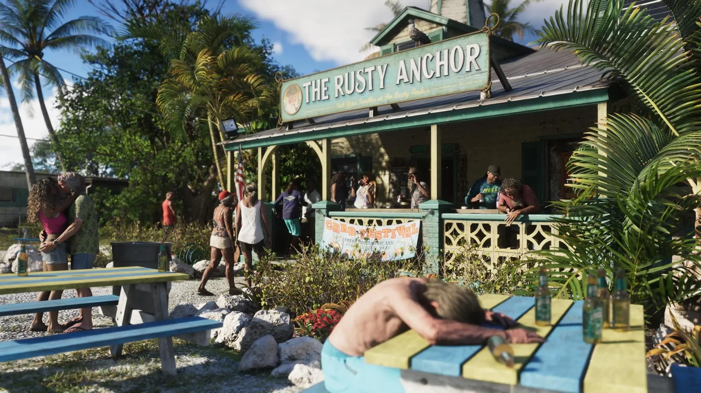

Down to Earth: прохождение миссии GTA 6
Опубликовано:

Коротко
- Первая совместная работа Джейсона и Лусии: на гидросамолёте Брайана забрать груз у контрабандистов в Bobcat Bay и раскидать его по трём точкам. А потом выясняется, что к дому едет надзирающий офицер Лусии, — товар надо срочно спрятать.
- Глава 1, миссия 14 из 22. Играем за: Джейсон.
- Награда: нет; открывается первое место медитации.
Миссия коротко
| Глава | 1. Just Like Paradise |
| Номер в сюжете | 14 |
| Играем за | Джейсон |
| Кто даёт | Брайан Хедер |
| Где начинается | пристань Брайана, Ки-Ленто → Bobcat Bay |
| Условие | Clean Up After Donnie и Buck Me |
| Награда | нет; открывается первое место медитации |
| Переиграть | нельзя — сохраняйтесь вручную |
Где начинается
Прохождение по шагам
- Найдите Брайана в офисе на пристани — он выведет вас к Кэлу и лодке.
- Отмойте лодку. Мойка высокого давления: L2 + R2 (LT + RT), пока не сойдёт вся зелёная грязь. Тут приходит Лусия — хочет посмотреть на вашу «работу».
- Летите в Bobcat Bay. Сядьте с Лусией в гидросамолёт и летите к розовой метке на дальнем северо-западе округа Мариана. Сядьте на воду рядом с лодкой.
- Выловите пакет. Контрабандисты бросают груз в воду: Лусия держит самолёт, вы цепляете пакет багром.
- Перестрелка. Контрабандисты ждали оплату, которой у вас нет. Отбейтесь.
- Три сброса. Летите к трём точкам и садитесь на воду — Лусия сама выкидывает пакеты. После второй точки береговая охрана начинает что-то подозревать, и третий пакет Лусия бросает прямо с воздуха.
- Скорее домой. У Лусии пропущенные звонки от надзирающего офицера — он едет к дому Джейсона.
- Спрячьте товар в стиральной машине под домом, пока Лусия встречает офицера.
- Поддержите Лусию у дома. Офицер уедет, а после ролика Лусия покажет, как медитировать на террасе.
Советы
- Выстрелы по рукам и ногам оставляют контрабандистов в живых и повышают Professional-репутацию; убийства — «жестокую». Больше способ боя ни на что не влияет.
- В воздухе рыскание — □ / ○ (X / B): так самолёт держится ровнее.
- Гидросамолёт Брайана — у воды за лодочным подъёмником.
- Медитация на террасе — первое из 18 мест медитации (нужно 15 для 100%, все — для трофея Positive Mental Attitude).
Подробности и секреты
- Дома товар прячут в сарае — в стиральной машине (PowerPyx, howtovideogame).
- Миссия открывается после Clean Up After Donnie и Buck Me (MetaForge, GamesRadar).
- По данным gamingpromax, за работу платят $500, и ещё $800 можно получить, продав кокаин.
Что можно пропустить
Пропускаемых предметов нет.
Частые вопросы
Куда спрятать груз в Down to Earth?
В стиральную машину под домом Джейсона, пока Лусия разговаривает с надзирающим офицером.
Где спрятать наркотики в Down to Earth?
В сарае у дома Джейсона — в стиральной машине.
Как поднять пакет из воды в Down to Earth?
Лусия держит самолёт рядом с пакетом, а Джейсон цепляет его багром.
Источники: PowerPyx, «GTA 6 Down to Earth Walkthrough», 19.11.2026; PC Gamer, «GTA 6 mission list», 19.11.2026; Of Zen and Computing, список трофеев, 19.11.2026; PowerPyx, GamesRadar, Rare Thief, eGamers, vicemissions, MetaForge, gta6box, howtovideogame, gamingpromax — Down to Earth, 18–28.11.2026. Кнопки указаны для PS5, в скобках — Xbox. Названия миссий — как в английской версии игры.